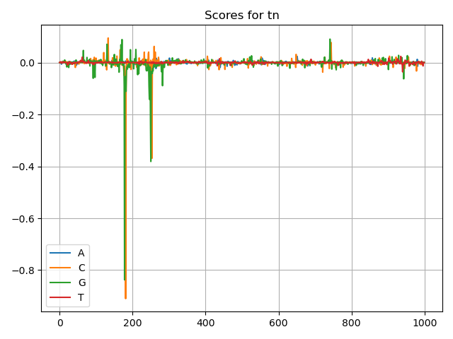
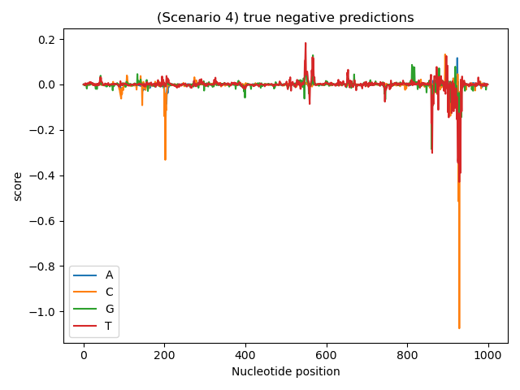
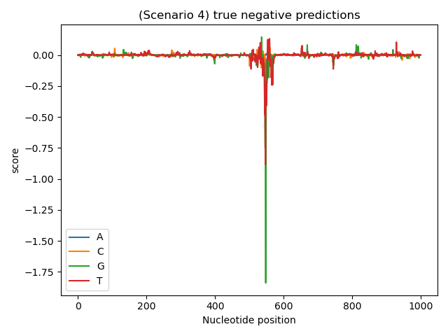
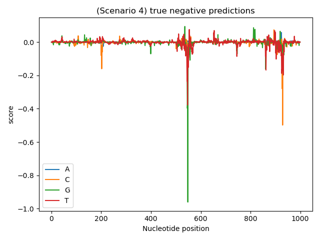

 Remember we spoke about the TATA-box motif. Well you are in luck because we played with it during our artificial simulation. The score plot on the right shows scenario 1 of our experiment. In this scenario we mutated the TATAAA (TATA-box) sequence into a TGTCAA. This means we introduced two mutations on a single TATA box for every sequence and gave it the label unexpressed. From the plot these mutations are indicated by orange (C) and green(G) signals moving in the negative direction. Reason: Here we play nature and decide the rules of expression and unexpression. Such that sequences with a single mutated TATA-box will be unexpressed. This is however, not always true in nature.

In scenario 4, we set the rules for an OR system. We mutated two motifs this time:
the TATAAA and a CATAAT motif. The TATAAA was mutated into a TGTAAA and the CATAAT was
mutated into CACAAT. Sequences can be expressed if they contain any of the mutations or
both of the mutations. In the first image, a gene had the mutation on the CATAAT
element. So we see the negative orange signal.

In the second image the gene tested had the mutation on the TATAAA element hence the green signal shown.

Finally a gene with the mutations on both elements, will have a mixture of green and orange signals
which are distant from each other. At this point you may be wondering why we have two orange signals
and just one green signal. All these signals are produced from the same gene, however these are different
variants of the same gene because they come from different genomes. This means there is possibility of
indels changing elements or shifting them within a sequence.
Hint The beautiful images and interpretation of our deep convolutional network we have is all thanks to the friendly folks who created the feature importance extraction tool called Deeplift. Deeplift computes importance scores by comparing each original sequence to a refernce input sequence, in our case a shuffled form of the original sequence.